MicroPython and the Internet of Things, Part IV: Wi-Fi and the Cloud
Posted by
on underIn this chapter I'm going to show you how to use the Wi-Fi capabilities of the ESP8266 chip.
If you want to see me and hear me explain everything in this tutorial, I encourage you to purchase the video version from my Courses site. Not only it will make for a better learning experience, but you'll also be supporting my effort in keeping my blog updated with relevant content. Thank you!
For your reference, here is the complete list of chapters in this tutorial:
- Chapter 1: Shopping List
- Chapter 2: Hello, MicroPython!
- Chapter 3: Building a MicroPython Application
- Chapter 4: Wi-Fi and the Cloud (this article)
- Chapter 5: Temperature and Humidity
- Chapter 6: Working with a Screen
The Two ESP8266 Wi-Fi Interfaces
The ESP8266 microcontroller has two Wi-Fi interfaces, which in Wi-Fi jargon are called access point and station interfaces. The access point interface allows devices with Wi-Fi such as your laptop to connect as clients to the microcontroller board. The station interface allows the microcontroller board itself to connect to other Wi-Fi access points such as the router in your home as a client.
The Access Point Interface
Current releases of MicroPython have the access point interface enabled by default. Connect your microcontroller board to a power source and then check the list of available Wi-Fi connections on your computer. While the microcontroller is running, you should see a MicroPython-XXXXXX connection:
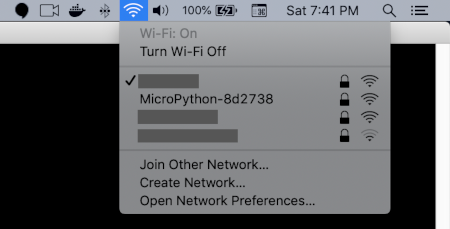
The default password for this connection is micropythoN (yes, that last N is uppercase). If you like, you can connect to your microcontroller with this password, but be aware that the microcontroller is not connected to the Internet through this interface so there is pretty much nothing you can do at this point while connected to it over Wi-Fi.
This interface can be managed using the network package from MicroPython. Here is how to create an object that represents this interface:
>>> import network
>>> ap_if = network.WLAN(network.AP_IF)
Now you can check if this interface is active:
>>> ap_if.active()
True
You can also get its settings:
>>> ap_if.ifconfig()
('192.168.4.1', '255.255.255.0', '192.168.4.1', '208.67.222.222')
The settings are, in order, the IP address, the subnet mask, gateway and DNS server. Don't worry if you don't know what these are, just know that they are the parameters that define this networking interface.
If you plan on using the access point, it is a good idea to change the network name and password, since you do not want some random person walking by your house getting offered to connect to the MicroPython-XXXXXX network with its default password on their phone! You can change the network name and password as follows:
>>> ap_if.config(essid='network name', password='password')
You can deactivate the access point if you don't plan on using it, which will also prevent it from appearing as a connection choice on phones and laptops:
>>> ap_if.active(False)
Or activate it again:
>>> ap_if.active(True)
The Station Interface
The station interface in your microcontroller is more interesting, because it will allow you to connect your board to the Wi-Fi network in your home and get access to the Internet through it:
>>> import network
>>> sta_if = network.WLAN(network.STA_IF)
The station interface is not active by default, so it needs to be activated if you intend to use it:
>>> sta_if.active(True)
You can have it detect Wi-Fi networks that are within reach:
>>> sta_if.scan()
[(b'NETGEAR99', b'\xa0@\xa0\x91}\xac', 3, -72, 3, 0), (b'test-net', b'pP\xaf\xc9\x90\xd2', 11, -73, 3, 0)]
The tuples returned here have the parameters of each available Wi-Fi connection. In particular, the first element in each tuple is the SSID name, the third element is the channel number, and the fourth is the RSSI or signal strength indicator.
Then you can connect to your Wi-Fi router with a simple connect() call, and you can ensure the connection was made with isconnected():
>>> sta_if.connect('your SSID', 'your Wi-Fi password')
>>> sta_if.isconnected()
True
As with the access point interface, you can also get the parameters of the connection:
>>> sta_if.ifconfig()
('192.168.0.45', '255.255.255.0', '192.168.0.1', '192.168.0.1')
In case this isn't clear, when you connect to your microcontroller board using one of the Wi-Fi interfaces, the USB cable is only used for providing power to the board. You could plug your microcontroller to the wall using a cell phone charger or adapter and you will still be able to connect to it using these two interfaces.
The MicroPython WebREPL
MicroPython includes an experimental version of the REPL that works over Wi-Fi and can be accessed from a web browser. To enable this option, start a standard REPL session with rshell and run the following command:
>>> import webrepl_setup
This is going to start an interactive configuration session that will ask you a few simple questions:
WebREPL daemon auto-start status: disabled
Would you like to (E)nable or (D)isable it running on boot?
(Empty line to quit)
> E
To enable WebREPL, you must set password for it
New password (4-9 chars): <enter a password here>
Confirm password: <enter a password again>
Changes will be activated after reboot
Would you like to reboot now? (y/n) y
Remember the password that you entered as part of this questionnaire, because you are going to need it later.
To use the WebREPL you need to download a client application, which runs on your web browser. You can download a zip file with this client from its git repository.
The download above is a zip file, which will likely be named webrepl-master.zip. You need to extract the contents of this zip into a directory, and then from that directory open the file named webrepl.html in your web browser.
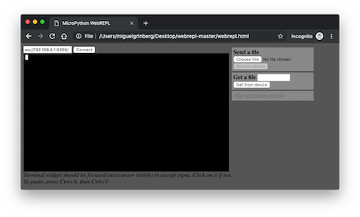
You can see that in the top left corner of the WebREPL client's window there is a text entry box that reads ws://192.168.4.1:8266/, followed by a "Connect" button. If you are connected to the microcontroller board through its access point interface, then the URL that appears in the entry field is the correct one, so you can press the Connect button to open the REPL.
If you connected the board's station interface to your home Wi-Fi, then you need to find out what is the IP address that was assigned to the board, and replace it in the text box. For example, you can see above that for my board, the sta_if.ifconfig() call shows that the IP address of the board as 192.168.0.45, so in my case the connection URL for the WebREPL should be changed to ws://192.168.0.45:8266. Make sure you only replace the IP address. The URL scheme needs to be ws:// (for WebSocket), and the port needs to be 8266. Once you set the correct IP address you can press the Connect button.
You will need to enter the WebREPL password that you selected during the setup, and then you will have access to the same REPL interface, but on your browser.
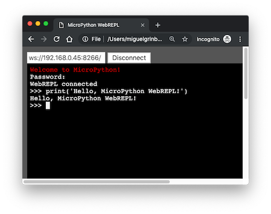
The WebREPL supports copying files between your computer and the microcontroller, which is done on the REPL's side panel. Unfortunately at the time I'm writing this the file upload and download options do not appear to be working. I'm sure this will eventually work well, so if you find that you like the WebREPL more than the rshell REPL, then you can use it in place of rshell's cp command to install application files on the board.
If you think you are going to use the WebREPL, then you can leave it enabled. But if you don't plan on using it to replace rshell, you can disable it by running import webrepl_setup again.
Using a Configuration File
To connect the board to your Wi-Fi router I had you type your router's password in the MicroPython REPL. I'm not sure about you, but seeing any kind of password written on the screen makes me very nervous. Continuing with the theme of providing you with good software development practices I think this is a good time to make an improvement on how the Wi-Fi connection is started, because you will need to include your Wi-Fi connection details in every application that you build from now on.
So what I'm going to ask you to do is to create a configuration file, where all these details are going to be stored. Once they are in the configuration, you will not need to enter them again, you will just import them from there. One of the simplest patterns for configuration files in Python is to use variables defined in a separate Python module.
As you did in the previous chapter, first create a separate subdirectory that is going to hold the code for this chapter. Make sure your current directory is set to micropython-tutorial and create a chapter4 subdirectory:
(venv) $ mkdir chapter4
(venv) $ cd chapter4
Now let's create a new file called config.py with the following contents:
WIFI_SSID = 'your SSID'
WIFI_PASSWORD = 'your Wi-Fi password'
You can now upload this file to your controller board. Using rshell the command is:
(venv) $ rshell --port <board serial port name> cp config.py /pyboard
Now, when you need to connect to your Wi-Fi network you can do it without having to write your password:
>>> import config
>>> import network
>>> sta_if = network.WLAN(network.STA_IF)
>>> sta_if.connect(config.WIFI_SSID, config.WIFI_PASSWORD)
>>> sta_if.isconnected()
Similar code to the above snippet will be included in almost all the remaining applications in this tutorial.
Sending HTTP Requests
Now that you have a good understanding of the Wi-Fi capabilities in your microcontroller board, it is time to learn how to do something useful with them. In terms of Internet access, nothing beats being able to send a web request (more specifically called HTTP request) out to a cloud based service, which is basically one of the core ideas behind the Internet of Things paradigm.
When using standard Python, most people use the requests package to send HTTP requests. MicroPython comes preloaded with urequests, which is a simplified version of requests.
To run the following example, make sure your microcontroller is connected to your home Wi-Fi router through the station interface so that it has access to the Internet. You can leave the access point interface in the board enabled, or if you prefer you can disable it, since it is not needed for this.
As an example of how to send a web request, I'm going to contact the icanhazip.com service, a simple web service that tells you what is your public IP address. Here is how to do it:
>>> import urequests
>>> r = urequests.get('http://icanhazip.com')
>>> r.status_code
200
>>> r.text
'56.19.70.24\n'
The urequests.get() function sends a web request using the GET method, which is normally associated with retrieving information from the remote server. For this example, the only argument to the function is the URL of the service that receives the request. More complex web services may require additional arguments, as you will see later.
The return value of the urequests.get() function is a response object. The status_code attribute of this response tells you the result of the operation using the standard numeric codes specified by the HTTP standard. Codes in the 2xx range are all success codes. Codes in the 3xx range are used to indicate redirects, which are not as common with web APIs as they are in standard web applications. Codes in the 4xx range are error codes that indicate the request is incorrect in some way. Codes in the 5xx range indicate that an unexpected error has occurred.
The text attribute of the response object contains the actual data returned by the service. For this service, the data returned is your public IP address, or in other words, the IP address that was assigned to your Wi-Fi router by your Internet service provider.
Setting Up a IFTTT Webhook
Now let's do something more "cloudy" with web requests. One of the standard ways in which events are communicated in the cloud is through webhooks. A webhook is basically a pre-configured web address that triggers an action when it is invoked. In this section I'm going to show you how to use the IFTTT platform to define a custom webhook that can perform an action of your choosing when your microcontroller board calls it. IFTTT supports a large number of actions, from sending an email or SMS to ordering pizza!
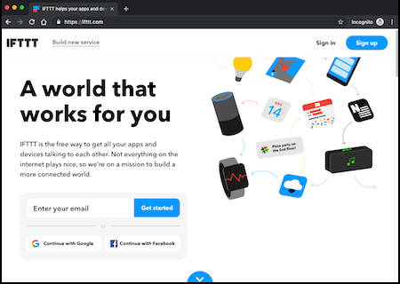
The name "IFTTT" is short for "If This, Then That", a reference to being able to create fully customized triggers and actions. To begin, create a free account at https://ifttt.com. As part of the new account creation you may be asked to provide a few services that you use to then get better recommendations. While it is not a problem if you do that, for this tutorial you can skip that part of the setup.
Once you are logged in to IFTTT, click on your username in the top-right part of the page, and then select "New Applet" from the menu. This will take you to the "if this then that" page:
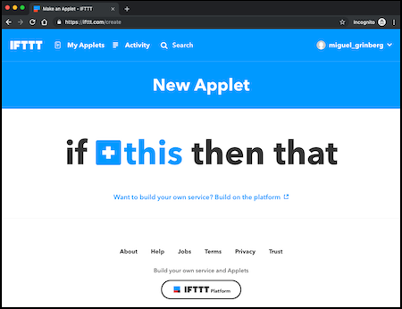
As you can probably guess, the "this" part is a trigger, and the "that" part is the action. Both are completely configurable and IFTTT provides dozens of integrations with third party services to help you build what you need.
Click on the "this" to configure the trigger. You are going to be offered lots of options from which you need to select a service called "Webhooks". You can type "webhook" in the search box to filter the list of services. Once you located the Webhooks service, click on it. You may be presented with a screen where you need to "connect" to this service. This is only going to appear the first time you use the Webhooks service in your account. Click on Connect to add it.
The Webhooks service provides a single trigger called "Receive a web request". Click on it to add it to the applet. You will then need to provide an event name for this trigger. This webhook is going to be invoked when a button is pressed, so I called my event button_pressed. You can use a different name if you like:
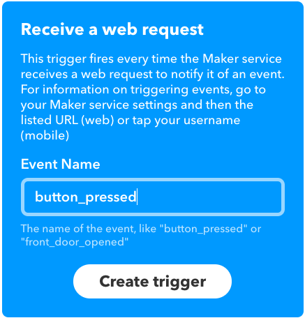
After you click the "Create trigger" button the "this" part will be complete, and you will be back to the "if this then that" page.
Now click on "that" to configure the action part. Once again you will be offered lots of integrations with third party services. My recommendation for this first example is that you pick an "easy" one, such as Email or SMS. The idea is that when this example is complete, when you push a button connected to the microcontroller an email or SMS will be sent to you. Once you have familiarized with the IFTTT service you can browse through the tons of integrations to see what cool ideas you can come up with to automate your life.
In my case I'm going to use the Email integration. If you don't see it as an icon, type "email" in the search box to help you find it. Click on it to configure an email action. The only action available in the email service is "Send me an email". Click on it to add it to the applet.
You will now see another configuration panel where you can define the subject and body of the email that will be sent out to you. Note how placeholders are used to define the variable parts.
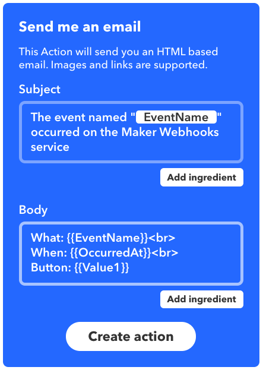
You are free to edit the subject and body of the email however you like. In my case I left the subject alone, but made a small change in the body of the email. The original format included an "Extra data" line that had three custom values that can be provided with the webhook, represented by placeholders called Value1, Value2 and Value3. For this example I'm only going to use only one custom value, so I edited the template so that this line shows only Value1 and labels it appropriately as "Button".
If this does not make much sense yet, do not worry, it will all be clear in a minute once you are able to see how IFTTT works. For now, click the "Create action" button and then on "Finish" complete the applet.
The webhook is fully set up, so let's give it a try. What you need to find out now is what is the webhook URL that was created for this applet. Click once again on your username in the top-right part of the page, and select "Services" from the menu. Then click on "Webhooks", and in the Webhooks page click on "Documentation".
You will be taken to a page that will allow you to build a URL for an event, including those three custom values that can be passed. Click on the {event} box and type button_pressed there (or the event name that you used in your applet). Then click on the empty box to the right of "value1" and enter micropython1 or any identifier that you want to use with the button that you will be building soon. This value will be associated with the {{Value1}} placeholder that was added in the email body.
After you entered the event name and the button identifier the bottom of the page will show an example request that you can use to trigger the action. This example is given using the curl utility, which is a very popular HTTP client that you can run from the command line. You also get a "Test It" button that you can click to invoke the webhook with the event name and custom values you provided. So as a first test, go ahead and click the test button, and a few seconds later an email should arrive (or whatever action you selected should be executed, if you didn't use an email).
If you verified that the webhook is working, now it's time to invoke this webhook from MicroPython, and for that we need to translate the curl command into urequests.
I showed you above how to send a GET request with urequests. For this request a POST method is used instead. This is the -X POST option sent to curl. So instead of urequests.get() this time it will be urequests.post().
The first argument to this function is the URL. This URL appears in the curl command as the last argument. It starts with https://maker.ifttt.com/trigger/... and includes your chosen event name and a long string of alphanumeric characters that are your webhook key. In case you are curious, the key is what identifies your account when the request is sent.
The curl command also includes a Content-Type header (given with the -H option) and a body (given with the -d option). The body is where the custom "value1" argument is given, using a very popular format with web APIs called JSON, which is somewhat similar to Python dictionaries. As it turns out, the Content-Type header is there to indicate to the web service that the request comes with JSON data in the body, so these two bits of data are related.
In urequests, sending a JSON body is actually easy. The Content-Type header does not need to be manually set as in curl, and the data needs to be given as a Python dictionary. The conversion to JSON and the header are added by urequests.
So finally, here is how this webhook can be invoked from MicroPython:
>>> import urequests
>>> r = urequests.post('http://maker.ifttt.com/trigger/button_pressed/...',
... json={'value1': 'micropython1'})
>>> r.status_code
200
If you want to give this a try, power up your microcontroller, and enter the REPL. Make sure you are connected to your Wi-Fi router, and then use the above code as a reference in creating your own webhook request. Make sure that the URL that you pass is the complete URL, including the long key that identifies your account.
Note that in the above snippet I entered the urequests.post() in two lines. When I reached the end of the URL I typed the comma and then pressed Enter. I then entered the rest of the call in a second line. This was entirely done by choice, it would have been just as well to enter everything in one line.
Did you get an email notification from the MicroPython issued request? Great! Now that the proof of concept is working, this needs to be made into an application!
Emulating the Amazon Dash Button
You have probably been suspecting this all along. What I'm working towards in this chapter is building a clone of the Amazon Dash button. In case you are not familiar with these devices, these are little Wi-Fi enabled buttons made by Amazon (now discontinued) that automatically order specific Amazon products when pressed. The button that you will have at the end of this chapter is going to invoke an IFTTT webhook, and that means that you will be able to select the action that is carried out when the button is pressed from any of the options supported under the IFTTT platform.
I've already showed you most of the functionality that is required to complete a first version of this project. The only part that I haven't discussed is how to implement the actual physical button that you have to push to trigger the webhook invocation. For the first solution I'm going to take advantage of the reset button that is already in this microcontroller board. What I'm going to do is to code my application so that it sends out the webhook request when it boots. So then each time the reset button is pressed, the board will reboot and a new request will be sent out.
So basically, the high-level structure of this application is going to be as follows:
connect_wifi()
call_webhook()
Simple, right? Now I just need to implement these two functions to complete the project.
Let's look at the connect_wifi() function first:
import time
import config
def connect_wifi():
ap_if = network.WLAN(network.AP_IF)
ap_if.active(False)
sta_if = network.WLAN(network.STA_IF)
if not sta_if.isconnected():
print('Connecting to WiFi...')
sta_if.active(True)
sta_if.connect(config.WIFI_SSID, config.WIFI_PASSWORD)
while not sta_if.isconnected():
time.sleep(1)
print('Network config:', sta_if.ifconfig())
This function is essentially a more robust version of the Wi-Fi connection code I've shown above. The function first deactivates the access point interface, since it is not used in this example.
Then it checks if the station interface is already connected. This is always a good idea, as that will make this function return immediately if the connection has been already established. If the Wi-Fi connection does not exist, then the interface is activated and then a call to the connect() function is made. A Wi-Fi connection can take a few seconds to be completed, and this happens asynchronously. To avoid returning from this function before the connection is fully established, I've added a while-loop that blocks the function until the isconnected() function returns True. Inside the loop I just call time.sleep(1) to wait for one second before checking the connection again. Using a while-loop with a sleep inside is a standard way to block until a condition is satisfied. Without the sleep the loop would be checking the connection repeatedly as fast as it could, and there is really no point in doing that. Checking at a rate of once per second is sufficient.
Before I implement the call_webhook() function, I'm going to take advantage of the configuration file that I built earlier and add more things to it, as that will help in keeping the code nicely organized. I'm going to add the webhook URL and the button name to the configuration, so that they are independent of the application, in the same way the connect_wifi() above is independent of the specific Wi-Fi connection details. Here is an expanded config.py file:
WIFI_SSID = 'your SSID'
WIFI_PASSWORD = 'your Wi-Fi password'
WEBHOOK_URL = 'http://maker.ifttt.com/trigger/button_pressed/...'
BUTTON_ID = 'micropython1'
Of course, you should set these four configuration settings as appropriate for you. In particular, note how I simplified the webhook URL, which in reality is going to be much longer as it includes the key that identifies your IFTTT account.
Now I can show you a first implementation of the call_webhook() function:
def call_webhook():
print('Invoking webhook')
response = urequests.post(config.WEBHOOK_URL,
json={'value1': config.BUTTON_ID})
if response is not None and response.status_code < 400:
print('Webhook invoked')
else:
print('Webhook failed')
This function considers any response that comes back with a status code of 400 or higher as an error. Note how I'm adding print() statements that provide information about what's going on in the application. These are obviously not going to be seen anywhere when you are running the device standalone, but the point of having them there is that you can also run these functions from the REPL, and in that case you will want to know what happens.
Here is an almost complete version of main.py with this application:
import network
import time
import urequests
import config
def connect_wifi():
ap_if = network.WLAN(network.AP_IF)
ap_if.active(False)
sta_if = network.WLAN(network.STA_IF)
if not sta_if.isconnected():
print('Connecting to WiFi...')
sta_if.active(True)
sta_if.connect(config.WIFI_SSID, config.WIFI_PASSWORD)
while not sta_if.isconnected():
time.sleep(1)
print('Network config:', sta_if.ifconfig())
def call_webhook():
print('Invoking webhook')
response = urequests.post(config.WEBHOOK_URL,
json={'value1': config.BUTTON_ID})
if response.status_code < 400:
print('Webhook invoked')
else:
print('Webhook failed')
The only thing I haven't added yet to main.py is the code that invokes these two functions, and the reason for that is that first I want to test these functions by hand from the REPL to make sure they are working. So go ahead and copy main.py and config.py to your microcontroller using rshell:
(venv) $ rshell --port <board serial port name> cp main.py config.py /pyboard
Then to start fresh you may want to unplug the microcontroller and plug it again. This is so that the Wi-Fi connection goes away. Now start a REPL session to test the two functions:
>>> import main
>>> main.connect_wifi()
Network config: ('192.168.0.45', '255.255.255.0', '192.168.0.1', '192.168.0.1')
>>> main.call_webhook()
Invoking webhook
Webhook invoked
>>> _
Since everything is working as expected, I can complete the application by adding the two calls to main.py. Here is the complete first version of my little Amazon Dash clone:
import network
import time
import urequests
import config
def connect_wifi():
ap_if = network.WLAN(network.AP_IF)
ap_if.active(False)
sta_if = network.WLAN(network.STA_IF)
if not sta_if.isconnected():
print('Connecting to WiFi...')
sta_if.active(True)
sta_if.connect(config.WIFI_SSID, config.WIFI_PASSWORD)
while not sta_if.isconnected():
time.sleep(1)
print('Network config:', sta_if.ifconfig())
def call_webhook():
print('Invoking webhook')
response = urequests.post(config.WEBHOOK_URL,
json={'value1': config.BUTTON_ID})
if response is not None and response.status_code < 400:
print('Webhook invoked')
else:
print('Webhook failed')
def run():
connect_wifi()
call_webhook()
run()
Here I added one more function called run() which combines the two other functions. The run() function is then invoked at the bottom from the global scope.
Copy the updated main.py to your board, and now each time the microcontroller is plugged in or restarted, the webhook is going to be hit. For now you can use the little reset button that comes with the board as "the button", and each time you press it the board will reset and call the webhook.
Reporting Errors
I've mentioned above that I've added the print() statements to the code so that I can see what the application is doing when I run it from the REPL. That is all great, but when the webhook request fails and the REPL isn't connected, there is currently no way to know there was a failure. Failures when sending requests can happen for many different reasons and are not that unlikely. For example, the IFTTT service could be temporarily down for maintenance. Since I haven't incorporated a screen yet, for now the only visual elements that I have available are (you guessed!) the LEDs! So let's blink the LEDs a few times to show that there's been an error. Here is a function that does the blinking called show_error():
import machine
def show_error():
led = machine.Pin(config.LED_PIN, machine.Pin.OUT)
led2 = machine.Pin(config.LED2_PIN, machine.Pin.OUT)
for i in range(3):
led.on()
led2.off()
time.sleep(0.5)
led.off()
led2.on()
time.sleep(0.5)
led.on()
led2.on()
This is similar to the blinking lights application from last chapter, but instead of using a while-loop I'm now using a for-loop that only runs the blinking cycle 3 times. I have also moved the LED_PIN and LED2_PIN constants to the configuration file. Here is a new main.py version that includes the LED error reporting:
import machine
import network
import sys
import time
import urequests
import config
def connect_wifi():
ap_if = network.WLAN(network.AP_IF)
ap_if.active(False)
sta_if = network.WLAN(network.STA_IF)
if not sta_if.isconnected():
print('Connecting to WiFi...')
sta_if.active(True)
sta_if.connect(config.WIFI_SSID, config.WIFI_PASSWORD)
while not sta_if.isconnected():
time.sleep(1)
print('Network config:', sta_if.ifconfig())
def call_webhook():
print('Invoking webhook')
response = urequests.post(config.WEBHOOK_URL,
json={'value1': config.BUTTON_ID})
if response is not None and response.status_code < 400:
print('Webhook invoked')
else:
print('Webhook failed')
raise RuntimeError('Webhook failed')
def show_error():
led = machine.Pin(config.LED_PIN, machine.Pin.OUT)
led2 = machine.Pin(config.LED2_PIN, machine.Pin.OUT)
for i in range(3):
led.on()
led2.off()
time.sleep(0.5)
led.off()
led2.on()
time.sleep(0.5)
led.on()
led2.on()
def run():
try:
connect_wifi()
call_webhook()
except Exception as exc:
sys.print_exception(exc)
show_error()
run()
The main change that I've made to make this application more robust is to add a try/except block around the code in the run() function. This is so that I can catch those unexpected errors and handle them by calling the function that blinks the lights. The sys.print_exception() function will show the error message and the location of the error in the same way errors that are not caught are shown. This is obviously going to be useful when you run the application manually from the REPL.
The other change is in the call_webhook() function. I've added a raise RuntimeError() right after I print the error message for a failed webhook. If you look at the code carefully, you'll notice that the raise statement will occur while the code that is inside the try block is running. This is in the call_webhook() function which is the second line inside the try. Any errors that occur in there, including this one that I'm self-generating, will trigger the code in the except block to run, and that is where I make the lights blink. If no errors occur, then the code in the except block will be skipped.
Doing the error handling in this way is nice, because not only I'm handling my own error condition, but I'm also capturing any unexpected ones. I've mentioned above that errors in requests come back with status codes 400 and above, but while this is in general true, you only get these codes when the server on the other side is running and is able to report them. There are situations in which the remote server cannot be contacted at all, and in those cases urequests will also raise an exception. The try/except block will catch my own error as well as any others that occur while those two functions in the try block run.
I should mention that in many cases doing a "catch-all" try/except is seen as a bad practice, because it can silence errors that would otherwise point to bugs or other conditions that you as developer might want to be aware of. In this case that does not apply because I'm using sys.print_exception() to show the error in the same way the MicroPython interpreter would have shown it.
Here is the new config.py that includes the LED pins:
WIFI_SSID = 'your SSID'
WIFI_PASSWORD = 'your Wi-Fi password'
WEBHOOK_URL = 'http://maker.ifttt.com/trigger/button_pressed/...'
BUTTON_ID = 'micropython1'
LED_PIN = 2 # D4
LED2_PIN = 16 # D0
To test how the error reporting works you can modify the webhook URL in config.py to be something incorrect. For example, change it to http://maker1.ifttt.com/.... Then each time you press the reset button, wait a couple of seconds and then you will see the blinking lights.
The Deep Sleep State
Did you consider what happens after you press the reset button and the webhook is invoked? The main.py script will reach the end, so the MicroPython interpreter will just remain idle until the reset button is pressed again, which will restart everything. While this does not present a technical problem, you may argue that it is wasteful to leave the microcontroller in a fully operational state when it is not doing anything. If you were powering the device with a battery then keeping the device running all the time would shorten the battery life in a considerable way.
The 8266 microcontroller has a mode called "deep sleep", in which it turns itself almost completely off. In particular, the Wi-Fi subsystem and the CPU are both stopped, and this is what makes this mode attractive, because the amount of power needed to maintain the deep sleep mode is minimal. The only subsystem that is kept awake is the real-time clock (RTC), and this is because there is a mechanism by which you can program the device to wake up from deep sleep at a specified time (we will learn about this particular topic in another chapter).
To make the microcontroller enter deep sleep mode you just need to call machine.deepsleep(). Once the device is in this mode, it can be awaken by pressing the reset button, which is exactly the behavior that is needed for the webhook.
There are many use cases in which it is necessary to know if the board is awakening from deep sleep, as opposite to being powered on for the first time. There is actually one that affects this project, which is that there is currently no way to distinguish a restart due to pushing the reset button versus a first start after the device is powered on. The machine.reset_cause() provides detailed information about the reset cause. The possible return values are:
machine.PWRON_RESET: the device was just powered on for the first time.machine.HARD_RESET: the device is coming back from a "hard" reset, such as when pressing the reset button.machine.WDT_RESET: the watchdog timer reset the device. This is a mechanism that ensures the device is reset if it crashes or hangs.machine.DEEPSLEEP_RESET: the device was reset while being in deep sleep mode.machine.SOFT_RESET: the device is coming back from a "soft" reset, such as when pressing Ctrl-D when in the REPL.
For the button application I can check that the reset cause was machine.DEEPSLEEP_RESET, and only in that case call the webhook.
Here is yet a new version of the run() function in main.py that puts the device into deep sleep mode after invoking the webhook, and also avoids the webhook for all reset causes except when it is coming out of deep sleep:
def run():
try:
if machine.reset_cause() == machine.DEEPSLEEP_RESET:
connect_wifi()
call_webhook()
except Exception as exc:
sys.print_exception(exc)
show_error()
machine.deepsleep()
With this change, the webhook is not going to be invoked when you first power the device, since in that situation the reset cause is going to be machine.PWRON_RESET. In that first running instance the microcontroller will go right into deep sleep mode. Then each time the reset button is pressed the device will boot and main.py will run again, and in those cases the reset cause will be the expected one, so the webhook will be invoked.
Adding a Debug Mode
Did you notice a problem with the change I've made in the previous section? Now the board is only awake for the short time it sends the webhook request. At any other times the device is almost entirely asleep, which means that you cannot connect to it with the REPL!
If you try to connect a few times you will eventually be able to connect, because rshell triggers a reset of the board when it fails to connect to it. But this is a very annoying problem that needs to be addressed. The solution I came up with is to have a "debug mode" for this application. When this debug mode is activated, the application will not put the board into deep sleep mode, it will keep it awake like before, and this will allow you to connect to it with rshell. Using a debug mode is a useful way to alter the behavior of the application to make your development work on it easier or more convenient.
Remember the button implementation from the previous chapter? That used pin D5, which was connected to GND with a button in the middle. I used the pull-up resistor attached to this pin to make the pin read a value of 1 when the button was released or 0 when it was pressed. The same concept can be used to create a debug "switch" that can tell the application if it is okay to go into deep sleep or not.
The debug switch will work as follows:
- If pin
D5reads as a 1 it means that it is not connected to ground and the pull-up resistor is giving it the 1 value. In this case I'm going to assume this is the "normal" mode, and deep sleep will be invoked after the webhoook is called. - If pin
D5reads as a 0, then it means that there is a connection from the pin to the ground, and that will make the application assume it is operating in "debug" mode, which will skip the deep sleep mode and keep the device awake at all times.
While using a button wired exactly as in the previous chapter is fine as a debug switch, these buttons that I'm using are not the best type for this because they don't stay in the pressed state. I would prefer a button that is really a switch, so that I can leave it in the on or off position to indicate which mode I want it to use. If you have a button of that type, you can use it to add the debug switch. Since I don't have that type of button at hand, I'm going to improvise.
To activate debug mode, I'm going to take a jumper wire and connect one end to pin D5, and the other end to a GND pin in the breadboard power strips. This would close the circuit and give the GPIO pin a value of 0, which would be the same as having the button pressed. And when I want to stop using debug mode, I just remove the jumper wire. Below you can see a diagram of the circuit when debug is in use:
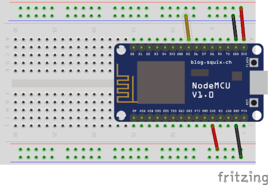
Now I can add another helper function that tells me if I'm in debug mode or not that is checked before machine.deepsleep() is invoked in run():
def is_debug():
debug = machine.Pin(config.DEBUG_PIN, machine.Pin.IN, machine.Pin.PULL_UP)
if debug.value() == 0:
print('Debug mode detected.')
return True
return False
def run():
try:
if machine.reset_cause() == machine.DEEPSLEEP_RESET:
connect_wifi()
call_webhook()
except Exception as exc:
sys.print_exception(exc)
show_error()
if not is_debug():
machine.deepsleep()
As you probably noticed, I've also added pin D5 to the configuration with the name DEBUG_PIN, so this is how config.py should look like now:
WIFI_SSID = 'your SSID'
WIFI_PASSWORD = 'your Wi-Fi password'
WEBHOOK_URL = 'http://maker.ifttt.com/trigger/button_pressed/...'
BUTTON_ID = 'micropython1'
LED_PIN = 2 # D4
LED2_PIN = 16 # D0
DEBUG_PIN = 14 # D5
Now you can upload the new versions of main.py and config.py to the board and see how normal and debug modes work. Note that if you do it carefully, you can insert the debug jumper wire while the device is connected to power, so you could go into debug mode by adding the wire and then pressing the reset button to trigger a restart that will not finish in deep sleep. If you connect the debug wire on a hot device, just make sure you don't inadvertently touch anything with the wire connectors, as you could cause a short circuit. If you prefer to be on the safe side, then disconnect the device from power before adding the wire.
Using an External Reset Button
There is one last improvement before I call this application complete. I thought it would be useful to wire an external button to trigger the webhook, since the on-board reset button is so small and difficult to reach. This button will have to work in a different way than the button from the previous chapter, because for this application the button needs to be wired to the reset function of the board.
Luckily, the board has a RST pin. This pin is pulled high (i.e. to a value of 1), just like the D5 pin I used for a button. If the pin is connected momentarily to ground, then also like the button from last chapter, it will go low (to a value of 0), and this will cause the board to reset. So then, I can hook up a button to the RST on one side, and to GND on the other. When the button is pressed, the connection between these two pins will be made, and that will reset the board. Here is the breadboard diagram including an external reset button:
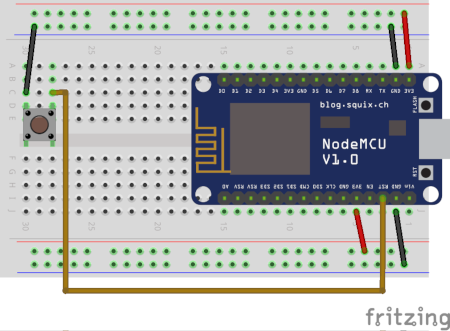
Note that I removed the debug wire in this diagram. You should add this wire whenever you want to prevent the board from going into deep sleep.
And with this I'm going to end this chapter. Remember to copy the latest versions of main.py and config.py to try the latest version on your board. Below you can see two views of my breadboard with the reset button in place:
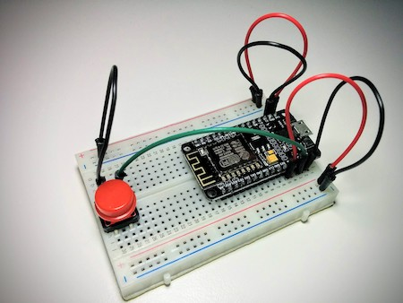
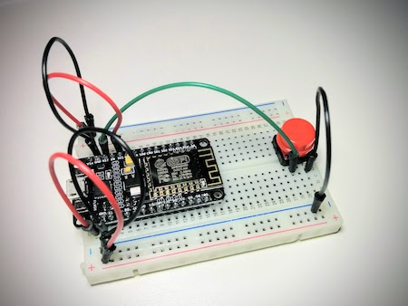
Become a Patron!
Hello, and thank you for visiting my blog! If you enjoyed this article, please consider supporting my work on this blog on Patreon!

-
#1 Ghouse said
Hi Miguel,
I'm unable to connect to my Dlink wifi router getting sta_if.status() as '4', but i'm able to connect my mobile hotspot wifi.
I also modified my Dlink wifi router Security Options to "None" or "WPA2-PSK(AES)" or "WPA-PSK/WPA2-PES(AES)" but still unable to connect using below code.
import network
sta_if = network.WLAN(network.STA_IF)
sta_if.active()
True
sta_if.connect('ssid','password')
sta_if.status()
1
sta_if.status()
1
sta_if.status()
4After googling i found status code "4" means STAT_CONNECT_FAIL – failed due to other problems
https://docs.micropython.org/en/latest/library/network.WLAN.html#network.WLAN.statusCould you please help me do i need to modify my dilink wifi router settings to accept connection.
-
#2 Miguel Grinberg said
@Ghouse: Hard for me to know what the problem is. Is this an old router? Is your router found when you call scan()?
-
#3 ghouse said
@miguel: My Router model: Dlink DIR 600M manufacture date: Jan 2016. yes i'm able to see my router when i do sta_if.scan()
MicroPython v1.11-8-g48dcbbe60 on 2019-05-29; ESP module with ESP8266
Type "help()" for more information.import network
sta_if = network.WLAN(network.STA_IF)
sta_if.scan()
[(b'Honor 9N_B85F', b'<\xcd]\x88t"', 1, -45, 3, 0), (b'ghouse_new', b'\x1c_+\x8d\xde4', 11, -50, 4, 0)]'ghouse_new' is my router.
'Honor 9N_B85F' is my mobile hotspot. -
#4 Miguel Grinberg said
@ghouse: the two differences you have between these two connections are the channel (1 for the one that works, 11 for the one that doesn't) and the authentication mode (3 for the working one, 4 for the other). I believe all the ones that I have used here were all 3s for auth mode, which is WPA2-PSK, while 4 is WPA/WPA2-PSK. Do you have a way to configure your router so that it appears as a 3 (i.e. WPA2 only)? That would be the first thing to try. The channel difference is less likely to be a problem, channel numbers are automatically detected, and I have seen different numbers there in my own tests.
-
#5 Ghouse said
@miguel: I configured wifi router to WPA only by using security options in dlink wifi router when i do scan() it shows 3 for authentication. Still am unable to connect. Im getting error status code as 4.
May i know which router your using, so that i can try with that.
Thank you for your support..
-
#6 Miguel Grinberg said
@Ghouse: I'm not using a generic router you can buy, I've got it from my Internet provider, Sky Networks. The Wi-Fi encryption mode on my router is "WPA2-PSK (AES)", which is the most secure of the WPA2 variants. I have also been able to connect to my phone's Wi-Fi access point without problem.
-
#7 Unagwu Chimezie said
Great as always.
-
#8 Zitienne said
Hi Miguel
Very informative, thank you.
How can I send the config file to the ESP32 without using the terminal. Terminal is not user friendly for non technical people. There needs to be some GUI that enables the end user to set SSID, password and some other device settings.
Options I can think of is:
1. Write a small desktop app, using python perhaps and the ampy and serial.py. Will need to be cross platform.
2. Create captive portal in AP mode that is launched when no config is present. This will also need some external interface to start in AP mode when button is pushed during boot to change settings.Any suggestions?
Cheers
-
#9 Miguel Grinberg said
@Zitienne: these are both valid options, I have nothing against them. You also need to flash micropython and the application code, so this uploader can do that as well. This course is for developers though, not for end users. You can apply what you learn and build the GUI that automates these tasks if your project can benefit from a single-click installation.
-
#10 Eron Castro said
Hi Miguel!
I have been following your Flask Tutorial, Flask Microservices tutorial and now MicroPython. Thank you for all!
One question: have you managed to use TLS with MicroPython and urequests?
Thanks!
-
#11 Miguel Grinberg said
@Eron: I don't use MicroPython a lot, but there isn't a problem with TLS that I recall, it was more of an issue with the limited RAM in the ESP8266 that required certificate verification to be disabled. Is this what you refer to? If you need this, I suggest you move up to a slightly more powerful microprocessor such as the ESP32.
-
#12 Fisher said
Hi Miguel,
Thanks for your huge help to me with the content of pycon 2016, and I'm also a reader of your Flask (Py3) Mega tutorial and the new react book on Amazon.
Recently I found out your another open source contribution, Microdot (async version), which works like a charm on my ESP32-WROOM. Now I've 5+ coros running multitasking and managed by html pages on Microdot, which is not worse than freeRTOS with C stuff in my opinion.Then I met a little problem, I realized that there is simply no good aio-httpclient in MicroPython, the only one there is out of date and so simple that even don't support post a body to the server.
So, may I ask what's your suggestion? I want to use one to runn in coro task and periodically post the weather data to a server, and it could be simple enough to avoid the mqtt stuff.Thanks,
Fisher -
#13 Miguel Grinberg said
@Fisher: I don't know of any async HTTP client, sorry. The only suggestion I can make is to take the urequests code and port it to async, which shouldn't be a huge effort since it isn't a very large module.
-
#14 Fisher said
OK, I see. Thanks anyway, I'm kinda integration role, but I guess that's not that tough if I really want one with some reading on documents.
Appreciate what u suggested, Sir. -
#15 Fisher said
Thanks again Miguel, and I found this works nicely - with async and timeout - perfectly meets my needs. Someone says https has problem but it's not one of my requirements.
https://github.com/StevenRuest/async_urequests